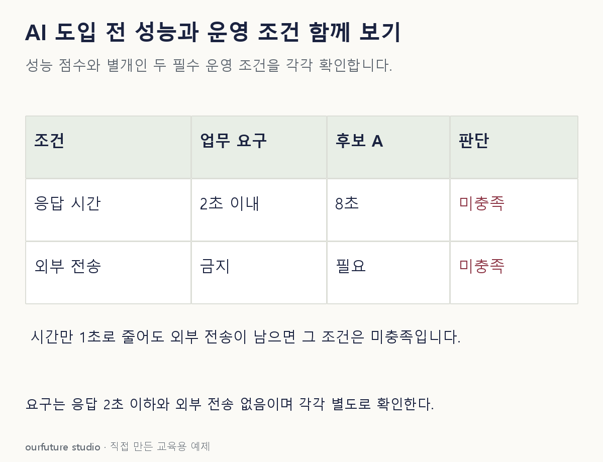

조건을 바꾸며 확인하기
자체 필수조건 두 개에 대한 점검이며 실제 제품 성능·법규 준수·운영 승인 판정이 아니다.
설명 그림과 비교하기
아래 그림과 표는 고정된 설명 예제입니다. 기본·변형 중 어떤 조건인지 캡션을 읽고, 바꾼 입력의 결과는 계산 칸에서 확인하세요.

같은 문제를 직접 골라 보기
업무는 2초 이내 응답과 외부 전송 금지를 요구한다. 후보 A는 8초가 걸리고 외부 전송이 필요하다.
조건을 더 바꾸면?
내부 설치로 전송 문제만 해결하고 응답은 여전히 8초라면?
변형 풀이 확인
2초 요구는 아직 충족하지 못했다.
한 제약의 해결을 전체 도입 조건 충족으로 확대하면 안 된다.
성능·데이터·시간·운영의 필수 조건을 같이 본다.